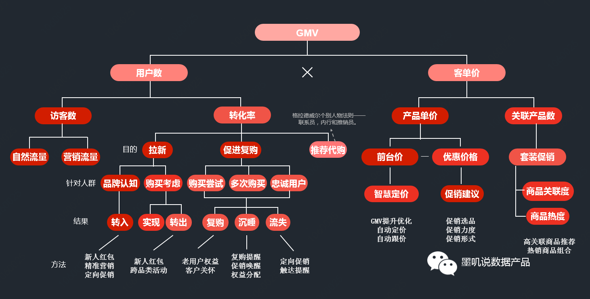
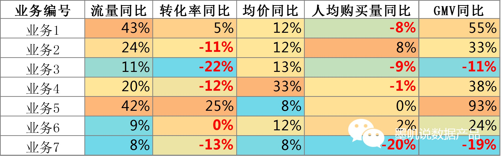
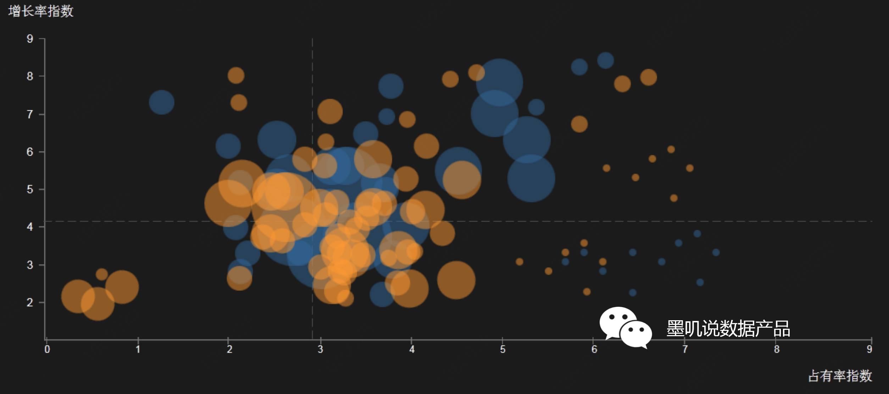
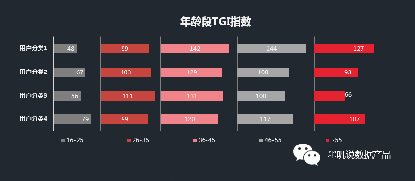

大数据000数据分析方法论
产品经理的概念在不断泛化。近些年来，随着互联网行业的发展，越来越多的企业意识到了大数据和精细化运营的重要性，为了更好地挖掘数据的价值，指导业务的优化和发展，数据产品经理应运而生，他们基于数据分析方法发现问题，并提炼关键要素，设计产品来实现商业价值。
虽为产品经理，但要真正解决核心问题，不免要在前期和中期进行大量的数据分析工作，那么，实用的数据分析方法有哪些呢？
一、业务分析类
1.杜邦分析法
杜邦分析法目前主要用于财务领域，通过财务比率的关系来分析财务状况，其核心要点是将一个大的问题拆分为更小粒度的指标，以此了解问题出在了哪儿，从而对症下药。
以电商行业为例，GMV（网站成交金额）是考核业绩最直观的指标，当GMV同比或环比出现下滑时候，需要找到影响GMV的因素并逐一拆解。 
GMV下降如果是因下单用户减少所造成的，那么是访客数（流量）减少了，还是转化率下降了呢？如果是访客数减少了，那是因为自然流量减少了，还是因为营销流量不足？
如果是自然流量下降的话，可能需要在用户运营和产品运营端发力，如果是营销流量不足，那么可以通过营销活动或者站外引流的形式增加曝光量。
同样，如果是转化率的问题，那么需要对用户进行细分，针对不同阶段的用户采取不同的运营策略，关于用户的部分，这里不做赘述，有兴趣的朋友可以关注后面的文章。
最后，如果是因为客单价不高，那么需要进行定价及促销的方案优化，比如识别具有GMV提升潜力的商品进行定价优化，评估当前促销的ROI，针对选品、力度和促销形式进行优化。同时通过关联商品的推荐或商品套装促销的形式，激发用户购买多件商品，也可以有效提高客单价。
2.同比热力图分析法
同比热力图分析法这个名称是我自己造的，其实无非是把各个业务线的同比数据放到一起进行比较，这样能更为直观地了解各个业务的状况。 
构建一张同比热力图大致需要三步：
第一步，按照杜邦分析法将核心问题进行拆解，这里仍以电商为例，我们将GMV拆成了流量、转化率、商品均价和人均购买量，
即GMV=流量转化率商品均价*人均购买量；
第二步，计算每个业务各项指标的同比数据；
第三步，针对每一项指标，对比各业务的同比高低并设定颜色渐变的条件格式，以上图中的转化率同比为例，业务5转化率同比最高，为深橙底色，业务3转化率同比最低且为负值，因此设定为蓝色底色加红色字体。
通过同比热力图的分析，首先，可以通过纵向对比了解业务自身的同比趋势，其次，可以通过横向对比了解自身在同类业务中的位置，此外，还可以综合分析GMV等核心指标变动的原因。
除了电商业务的分析以外，同比热力图同样适用于互联网产品数据指标的监控及分析，该分析方法的关键点在于拆解核心指标，在本文后面的产品运营类方法中将会介绍相关指标的拆解方法。
3.类BCG矩阵
BCG矩阵大家都非常熟悉了，以市场占有率和增长率为轴，将坐标系划分为四个象限，用于判断各项业务所处的位置。
这里想讲的并非传统的BCG矩阵，而是BCG矩阵的变阵，或者叫类BCG矩阵。根据不同的业务场景和业务需求，我们可以将任意两个指标作为坐标轴，从而把各类业务或者用户划分为不同的类型。
比如可以以品牌GMV增长率和占有率构建坐标系，来分析各品牌的状况，从而帮助业务方了解到哪些品牌是未来的明星品牌，可以重点发力，哪些品牌处于弱势且增长匮乏，需要优化品牌内的产品布局。 
除此之外，我们还可以根据以下场景构建类BCG矩阵：
1）分析商品引流能力和转化率：流量份额-转化率
2）分析商品对毛利/GMV的贡献：毛利率-销售额
3）基于RFM分析用户的价值：访问频率-消费金额
按照上述方法，大家可以根据需求大开脑洞，按照一定标准对研究对象进行分类分析。
二、用户分析类
1.TGI指数
在分析用户时，通常的做法是将目标用户进行分类，然后对比各类用户与总体之间的差异性，TGI指数提供了一个很好的方法，来反映各类用户群体在特定研究范围(如地理区域、人口统计、媒体偏好等)内的强势或弱势。
TGI指数=用户分类中具有某一特征的群体所占比例/总体中具有相同特征的群体所占比例*100。
比如在分析用户的年龄段时，可以通过TGI指数对比各用户分类与总体在各年龄段的差异，设用户分类1中16-25岁的用户占比为4%，而总体中16-25岁的用户占比为8.3%，那么用户分类1在16-25岁用户中的TGI指数为4%/8.3%*100=48。依照这一方法，我们可以对各类用户在各年龄段的TGI指数进行对比。 
如上图所示，各类目标用户在16-25岁这个年龄段的占比都比总体小（TGI指数<100），其中分类1的用户年龄偏大，因为该类用户在36岁以上各个年龄段的TGI指数都明显高于100，且同时高于其他三类用户。
当前在互联网领域，除了用户实名数据以外，其他用户的画像维度一般都通过建立模型进行判断，因此无法完全保证准确性，但不同于小样本调研，大数据分析是能容忍一定数据误差的，不过，这一切都要建立在对比的基础上。
所以，在分析用户画像时，需要根据场景进行用户分类，并对比各类用户与总体间的差异，这样才能保证分析结果的可信性和适用性，而TGI指数就是很好的对比指标。
2.LRFMC模型
RFM模型是客户关系管理中最常用的模型，但这一模型还不够完善，比如对于M(Money)，即消费金额相等的两个用户而言，一个是注册两年的老用户，一个是刚注册的新用户，对于企业来说，这两个用户的类型和价值就完全不同，因此我们需要更全面的模型。
LRFMC模型提供了一个更完整的视角，能更全面地了解一个用户的特征，LRFMC各个维度的释义如下：
L(lifetime):代表从用户第一次消费算起, 至今的时间，代表了与用户建立关系的时间长度，也反映了用户可能的活跃总时间。
R(Recency) :代表用户最近一次消费至今的时间长度，反映了用户当前的活跃状态。
F(Frequency) :代表用户在一定时间内的消费频率，反映了用户的忠诚度。
M(Monetary) :代表用户在一定时间内的消费金额，反映了用户的购买能力。
C(CostRatio):代表用户在一定时间内消费的折扣系数，反映了用户对促销的偏好性。
以去哪儿的业务为例，通过LRFMC模型可以综合分析用户的习惯偏好和当前状态，从而指导精准营销方案的实施。
L(lifetime):用户来多久了？
R(Recency) :用户最近是否有消费，如果来了很长时间都未消费，是否需要进行唤醒？
F(Frequency) :用户出行的频率如何，如果是固定周期出行，是否应该进行复购提醒？
M(Monetary) :用户的消费金额是多少，是单价高（购买头等舱），还是频次高？
C(CostRatio):用户对折扣的偏好如何，是为用户增加权益还是降价促销？
三、产品运营类
产品运营是一个长期的过程，需要定期对产品的使用数据进行监控，以便发现问题，从而确定运营的方向，同时也可以用于评估运营的效果。
产品运营的常用指标如下：
1）使用广度：总用户数，月活
2）使用深度：每人每天平均浏览次数，平均访问时长
3）使用粘性：人均使用天数
4）综合指标：月访问时长=月活人均使用天数每人每天平均浏览次数*平均访问时长
产品所处阶段不同，运营的侧重点也会有所不同。在产品初期，核心的工作是拉新，应该更加关注产品的使用广度，而产品的中后期，应该更加注重使用深度和使用粘性的提升。
对于不同的产品也需根据产品的性质来确定核心指标，比如，对于社交类产品，使用广度和使用粘性至关重要，而对于一些中台分析类产品，提升使用深度和使用粘性更有意义。
四、结语
在一款数据产品诞生前，应该是先有数据，再有分析，然后才是产品，分析的广度和深度直接决定了产品的定位和价值。如果是做一款数据报表类的产品，那么需要了解核心指标，并建立综合指标的评估体系，如果是做一款分析决策类产品，那么还需要基于业务需求，将现有数据指标进行解构再重构。
以上内容仅仅是提供了一些基础工具和思考方向，数据产品经理是一个新兴的分支，目前还没有成熟的学习体系，未来还需继续深入浅出，和大家共同成长。